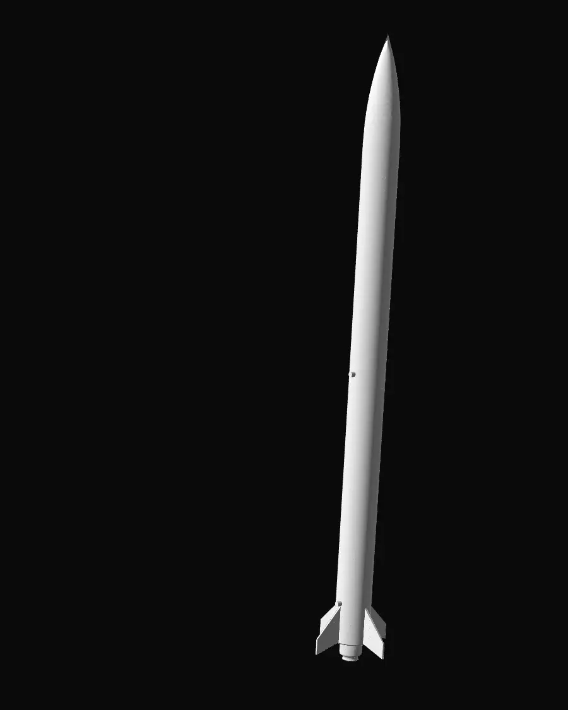
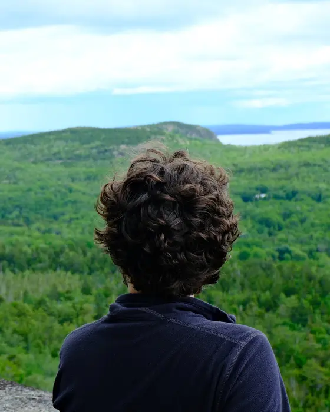
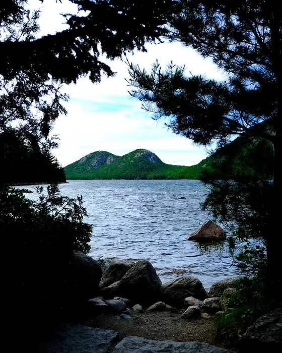
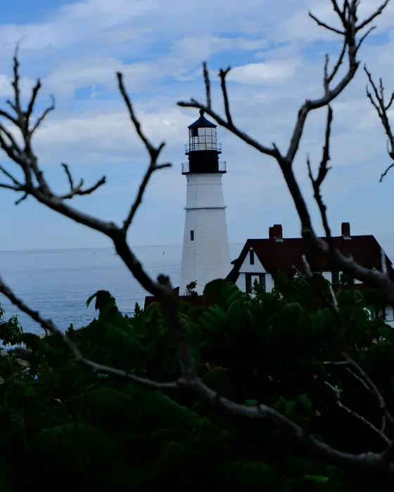
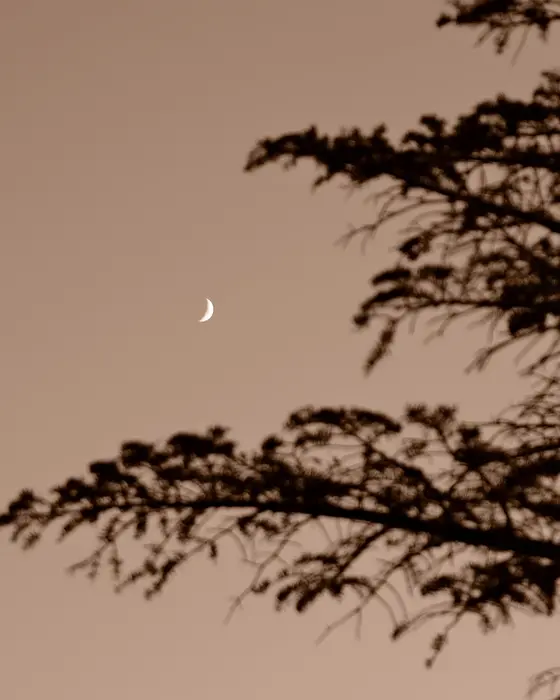
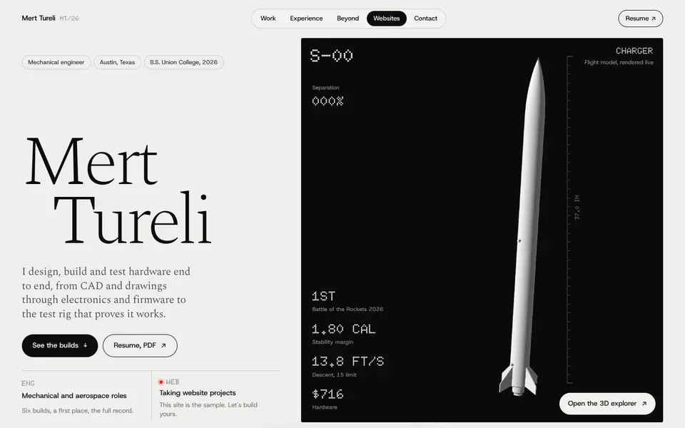
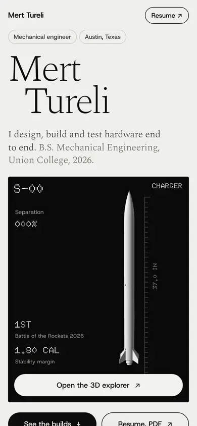

- Mechanical engineer
- Austin, Texas
- B.S. Union College, 2026
Mert Tureli
I design, build and test hardware end to end, from CAD and drawings through electronics and firmware to the test rig that proves it works. B.S. Mechanical Engineering, Union College, 2026.

- Battle of the Rockets 2026
- 1ST
- Stability margin
- 1.80 CAL
- Descent, 15 limit
- 13.8 FT/S
- Hardware
- $716
Selected builds, 2025 to 2026
Six builds at one scale
Every build rendered from its source assembly as a study model. Hover or tap a plate for the real thing.
- 1STBattle of the Rockets 2026, Deployable Sensor Payload, as captain and chief engineer
- +700%Rocket team budget, from funding proposals I wrote
- $70,000Seed funding raised for ModuFly
- 3Festival nominations for one solo short film
Experience
Where I worked
-
06.2026 / 09.2026
SunThru
Engineering intern / Schenectady, NY
Built and tested the company's first full in-house prototype units and led validation on thermal performance and optical clarity. Supported bring-up of a PLC automation system, from ladder logic to panel wiring.
1 WKTo source a replacement production blower
-
08.2023 / 06.2026
Union College Rocket Team
Founder and president / Schenectady, NY
Started the team from nothing and built it to competition standard. Led the competition team as captain, trained new members through build labs and owned safety compliance for high power launches.
12Person competition team I led
-
09.2024 / 01.2026
ModuFly
Co-founder / Schenectady, NY
Co-founded a startup around a modular interlocking rocket system for STEM education. Raised $70,000, starting with a $10,000 SparkLabs prize. Led R&D and production and ran hands-on rocketry workshops.
20+High school students taught
-
SUMMER 2024
TASECS
Design engineer and materials intern / Ankara
Aerospace thermal management. Designed high efficiency HVAC valve components and ran stress and fatigue analysis supporting national fighter and jet trainer programs.
2National aircraft programs supported
Toolkit
- Design and CAD
- SolidWorks, expert / GD&T to ASME Y14.5 / Tolerance stack-up / DFM and DFA / CATIA
- Controls
- PLC ladder logic / Panel wiring / 4-20 mA instrumentation / PID control
- Electronics and firmware
- C++ / ESP32 / Teensy / USB HID / Embedded data acquisition
- Analysis
- FEA / CFD / MATLAB / Heat transfer / Stress and fatigue
- Fabrication
- FDM and SLA printing / Laser cutting / Milling / Lathe
- Languages
- Turkish, native / English, professional / German, intermediate / Spanish, beginner
Beyond engineering
Off the bench
- Piloting
- Licensed ultralight pilot, certified through the Turkish civil aviation authority. The rudder pedals came out of the same interest.
- Filmmaking
- Three short films screened at the Robert College Film Festival in 2022. One solo short was nominated for cinematography, editing and sound design.
- Photography
- An ongoing thing rather than a project.
- Cooking
- Most days, mostly the food I grew up with in Izmir.
- Travelling
- I grew up in Izmir, moved to New York for the degree and travel whenever there is room to.

PH-01 
PH-02 
PH-03 
PH-04
Websites / Design and development
Like what you see? Let's build yours.
Your work, your business, your next idea. I design and build websites people want to explore, by hand, the same way I built this one.
- 01Pick a day. I reply by email to confirm a time.
- 02Tell me the idea. A rough one is a good place to start.
- 03I design and build it. Static, fast, made for your content.


Contact
Get in touch
Based in Austin, Texas. For a conversation about engineering, a website, or something interesting you are building, write to me.
- Emailmerttureli0@gmail.com
- LinkedInlinkedin.com/in/merttureli